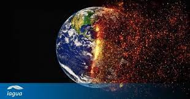

Cultura Y Arte
Cobertura de eventos culturales, festivales, exposiciones de arte, premios internacionales, cine, música y literatura de diferentes partes del mundo.
Volver a InicioLos medios de comunicación, como periódicos, revistas, sitios web y canales de televisión internacionales, se dedican a informar sobre las noticias internacionales para mantener a las personas informadas sobre los eventos que tienen lugar más allá de sus fronteras nacionales.
El cambio climático es un fenómeno global que afecta a todo el mundo. A medida que aumentan las concentraciones de gases de efecto invernadero en la atmósfera debido a las actividades humanas, se producen una serie de cambios en el clima a nivel mundial.
La ciencia y la tecnología desempeñan un papel fundamental en el desarrollo y el progreso de la sociedad en todo el mundo.
Cobertura de eventos culturales, festivales, exposiciones de arte, premios internacionales, cine, música y literatura de diferentes partes del mundo.
Volver a InicioTEL: 4756-2183
© 2023 Kinal News. Todos los derechos reservados.